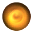
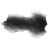
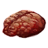
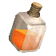
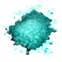
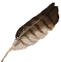

Фрахлумп
Открыть в интерактивной вики →
Рецепт
Обмен
Создание: 5x
Создание: 10x Траметес + 50x
Траметес + 50x
Создание: 30x Живица + 20x
Живица + 20x  Светящаяся рыба + 40k
Светящаяся рыба + 40k
Создание: 10x Кожа великана + 40k
Кожа великана + 40k
Создание: 5x

Древняя энергия + 20x
Шкура серого волка + 40kСоздание: 10x
Траметес + 50x 
Мозг летучей мыши + 40kСоздание: 30x
Живица + 20x Светящаяся рыба + 40kСоздание: 10x

Пылающая вода + 5x
Ворлинский прах + 5x
Перо ястребенка + 2xКожа великана + 40k